CS184 Homework 4 Write-Up
Link to webpage: https://cal-cs184-student.github.io/hw-webpages-luu-212/
Link to GitHub repository: https://github.com/cal-cs184-student/hw4-clothsim-hw4-lu
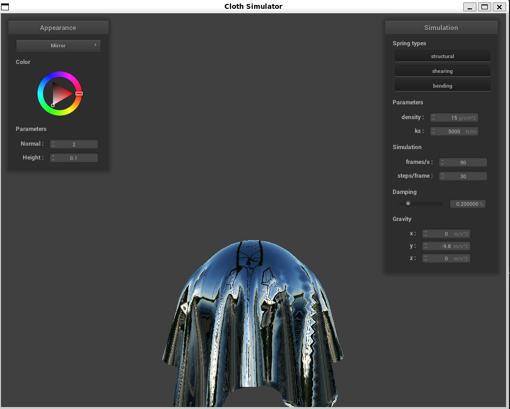
Overview
In this assignment, we built a physically-based cloth simulation system from scratch using a mass-spring model, numerical integration, collision handling, and GPU-based shading techniques. Starting from a discrete grid of point masses connected by springs, we simulated realistic cloth behavior under external forces such as gravity, wind, and user interaction.
The implementation progressed through several major components. First, we constructed the structural, shearing, and bending spring system to define the physical constraints of the cloth. Then, we implemented force accumulation and Verlet integration to simulate motion over time, along with constraint enforcement to maintain stability. Next, we extended the system to support collisions with external objects such as spheres and planes, as well as efficient self-collision handling using spatial hashing to avoid quadratic complexity.
On the rendering side, we explored a variety of shading techniques using GLSL shaders, including diffuse shading, Blinn-Phong lighting, texture mapping, bump mapping, displacement mapping, and environment-mapped reflections. We also implemented a custom shader to enhance the visual richness of the cloth with iridescent effects.
One of the most interesting aspects of this assignment was observing how different physical parameters (such as spring stiffness, density, and damping) directly affect the behavior of the cloth. Additionally, implementing spatial hashing for self-collision demonstrated how algorithmic optimization can significantly improve performance in physically-based simulations.
Overall, this assignment provided a comprehensive understanding of how physical simulation and rendering interact in computer graphics systems, bridging the gap between mathematical modeling and visually realistic results.
Part 1: Masses and Springs
In this part, we implemented a mass-spring system to model a piece of cloth. The cloth is discretized into a grid of point masses arranged in row-major order, where each point mass represents a small portion of the cloth. The positions of these masses are determined based on the cloth’s width, height, and orientation.
For a horizontal cloth, point masses are placed on the xz-plane with a constant y-coordinate, while for a vertical cloth, point masses are placed on the xy-plane with a small random offset in the z-direction to avoid numerical issues during simulation.
We then constructed three types of spring constraints between neighboring point masses:
- Structural springs connect each point mass to its immediate neighbors to the left and above, forming the basic grid structure.
- Shearing springs connect diagonal neighbors, providing resistance to shear deformation.
- Bending springs connect point masses that are two units apart, helping the cloth resist bending and maintain smooth curvature.
To visualize the structure of these constraints, we rendered the cloth wireframe under different configurations:
- Without shearing constraints, the cloth appears as a regular grid composed of horizontal and vertical lines only.
- With only shearing constraints, the cloth forms a network of diagonal connections, creating an “X”-like pattern across the surface.
- With all constraints enabled, the cloth shows a dense triangular structure combining grid, diagonal, and long-range connections, resulting in a more stable and realistic configuration.
These results confirm that each type of spring contributes differently to the physical behavior of the cloth.
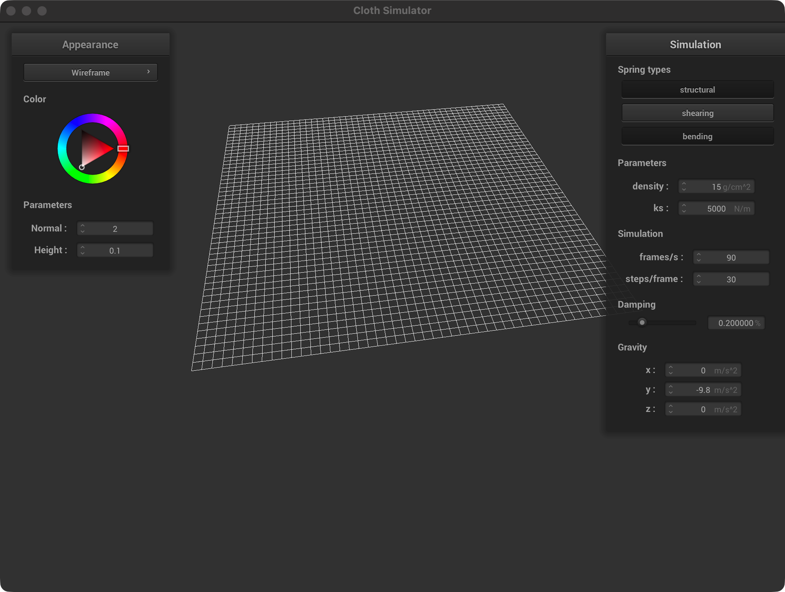
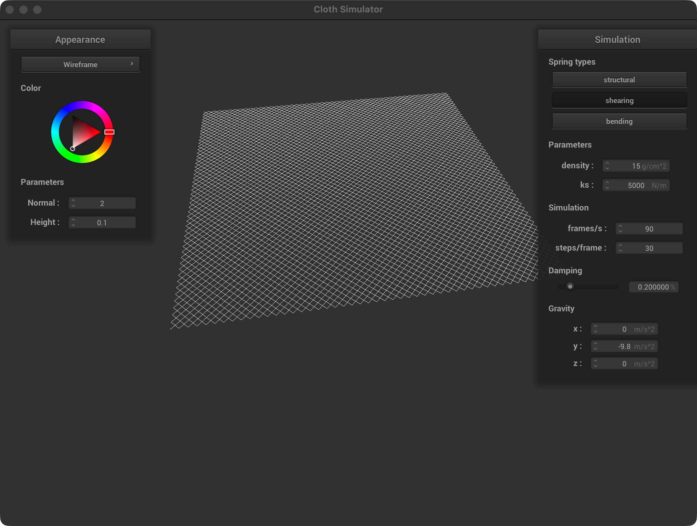
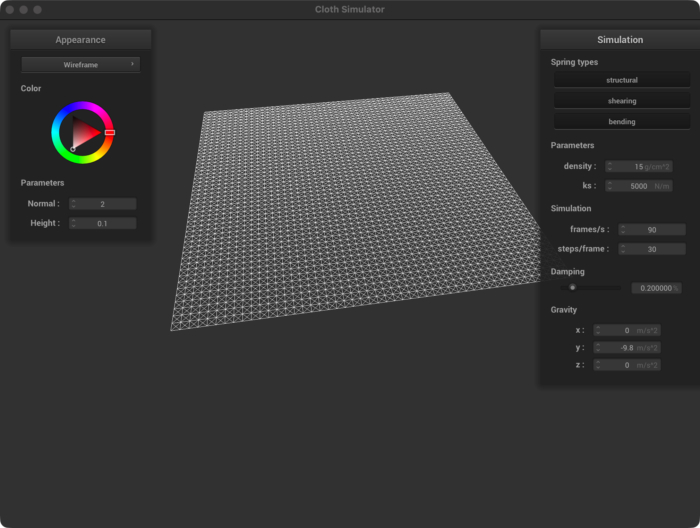
Part 2: Simulation via Numerical Integration
Overview
In this part, we simulated the physical behavior of cloth by modeling it as a system of point masses connected by springs. At each time step, we computed the total forces acting on each point mass and updated their positions using Verlet integration.
There are two main types of forces in the system:
Force Computation
For each simulation step, we first reset the force vector of every point mass. Then, we applied:
-
External forces:
These are computed by summing all external accelerations and multiplying by the mass of each point mass using Newton’s Second Law:
\[ F = m \cdot a \]
-
Spring forces:
For each spring, we computed the force using Hooke’s Law:
\[ F = k_s \left(\|p_a - p_b\| - l_0\right) \]
where:
- ks is the spring constant
- pa and pb are positions of the two connected point masses
- rest_length is the original length of the spring
Bending springs were scaled by a factor (e.g., 0.2) to make them weaker than structural and shearing springs.
Verlet Integration
We used Verlet integration to update the position of each point mass:
\[ x_{\text{new}} = x + (1 - d)(x - x_{\text{last}}) + a \cdot dt^2 \]
where:
- x is the current position
- x_last is the previous position
- a is acceleration (F / m)
- d is the damping factor
- dt is the timestep
This method is stable and avoids explicitly computing velocity.
Constraint Enforcement
To prevent unrealistic stretching, we enforced a constraint that limits each spring’s length to at most 10% longer than its rest length.
If the current length exceeded this limit, we corrected the positions of the two connected point masses along the direction of the spring:
- If both masses are free → correction split equally
- If one is pinned → all correction applied to the free mass
- If both are pinned → no correction applied
This constraint ensures stability and prevents the cloth from “exploding.”
Parameter Experiments
We experimented with different simulation parameters to observe their effects on cloth behavior.
Effect of Spring Constant (ks)
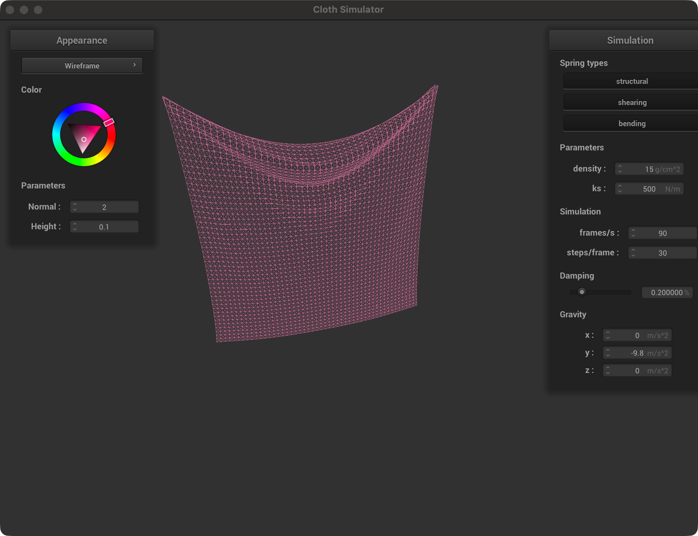
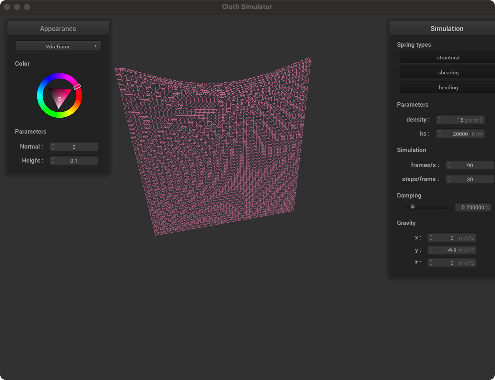
Effect of Density
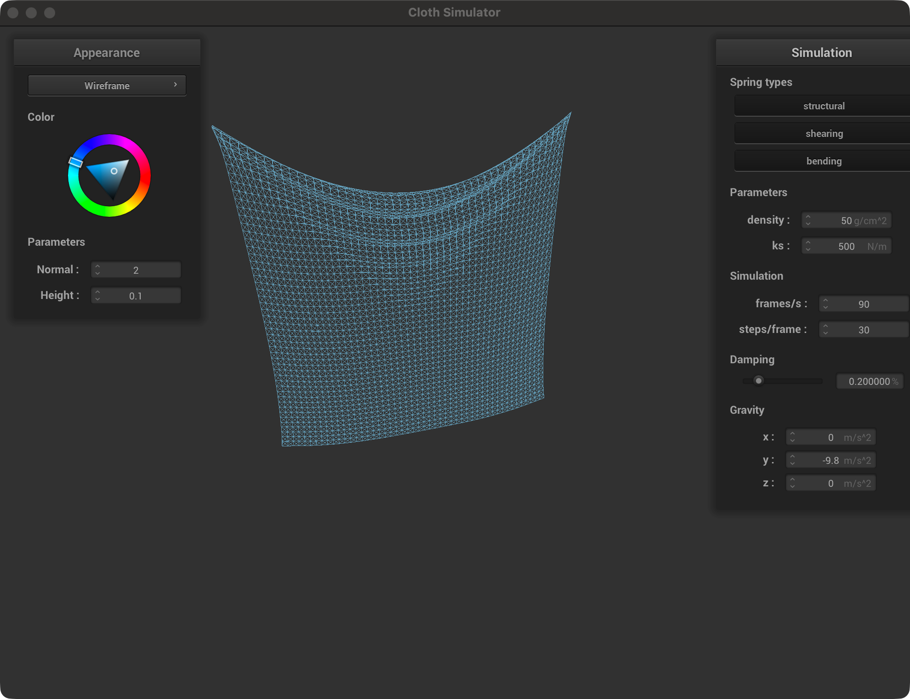
Effect of Damping


Final Resting State
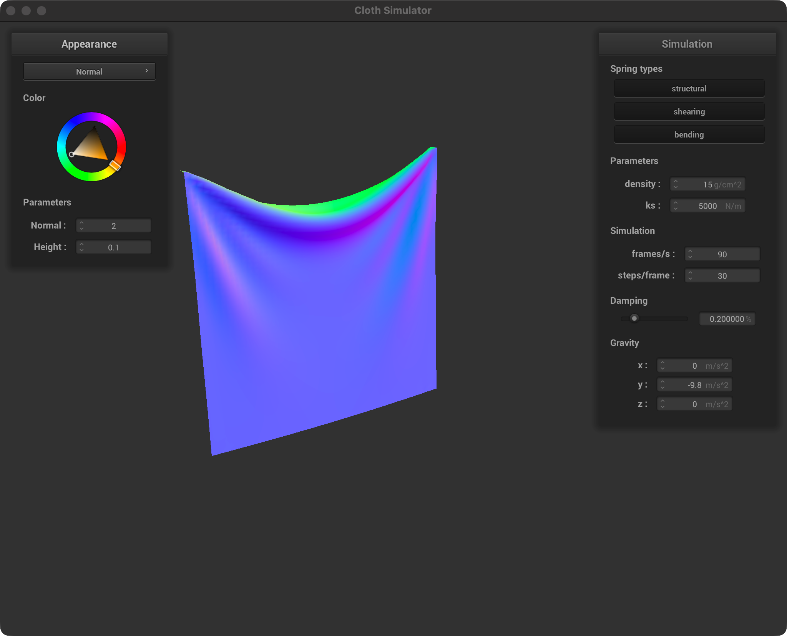
Part 3: Handling Collisions with Other Objects
In this part, we implemented collision handling between the cloth and external objects, specifically spheres and planes. The goal is to ensure that point masses do not penetrate these objects and instead remain on their surfaces with realistic physical behavior.
Sphere Collision
To handle collisions with a sphere, we first check whether a point mass lies inside the sphere by comparing its distance to the sphere’s center with the sphere’s radius.
If a point mass is found inside the sphere, we compute a tangent point on the sphere surface by projecting the point mass onto the sphere along the direction from the sphere center. This ensures that the corrected position lies exactly on the surface.
We then compute a correction vector from the point mass’s previous position to this tangent point. The new position is obtained by applying this correction scaled by a friction factor:
\[ \text{new_position} = \text{last_position} + (1 - f)\cdot \text{correction} \]
This prevents the point mass from penetrating the sphere while also simulating energy loss due to friction.
Plane Collision
For plane collisions, we detect whether a point mass crosses the plane by checking if its position changes from one side of the plane to the other between time steps.
If a crossing is detected, we compute the intersection point (tangent point) between the motion path and the plane. We then shift this point slightly along the plane normal using a small constant offset to ensure the point mass stays above the surface.
Finally, we apply a correction similar to the sphere case, again incorporating friction:
\[ \text{new_position} = \text{last_position} + (1 - f)\cdot \text{correction} \]
This ensures that the cloth rests naturally on the plane without penetrating it.
Effect of Spring Constant (ks) on Sphere
We experimented with different values of the spring constant to observe how stiffness affects the cloth behavior when draped over a sphere.
-
Low ks (ks = 500):
The cloth is very soft and conforms closely to the shape of the sphere. It wraps tightly around the sphere and exhibits significant deformation. -
Medium ks (ks = 5000):
The cloth maintains a balance between flexibility and stiffness. It drapes naturally over the sphere with moderate deformation. -
High ks (ks = 50000):
The cloth becomes stiff and resists bending. It does not conform well to the sphere and instead forms a more rigid structure over it.
Conclusion:
Lower ks results in more flexible cloth that better conforms to object shapes, while higher ks produces stiffer cloth with less deformation.
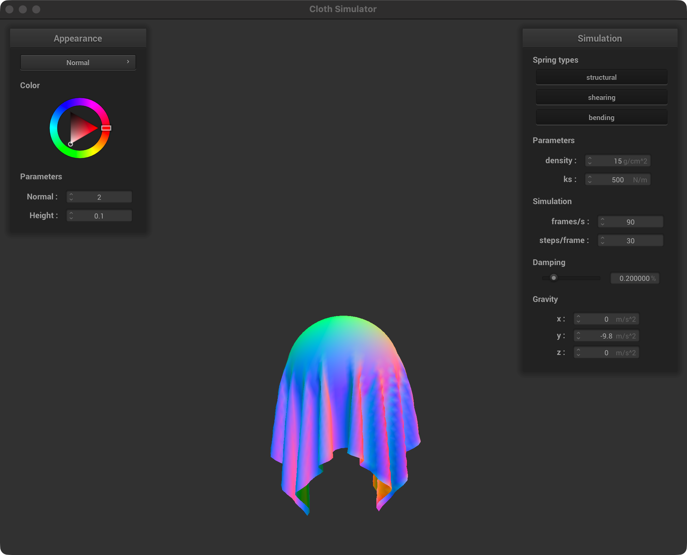
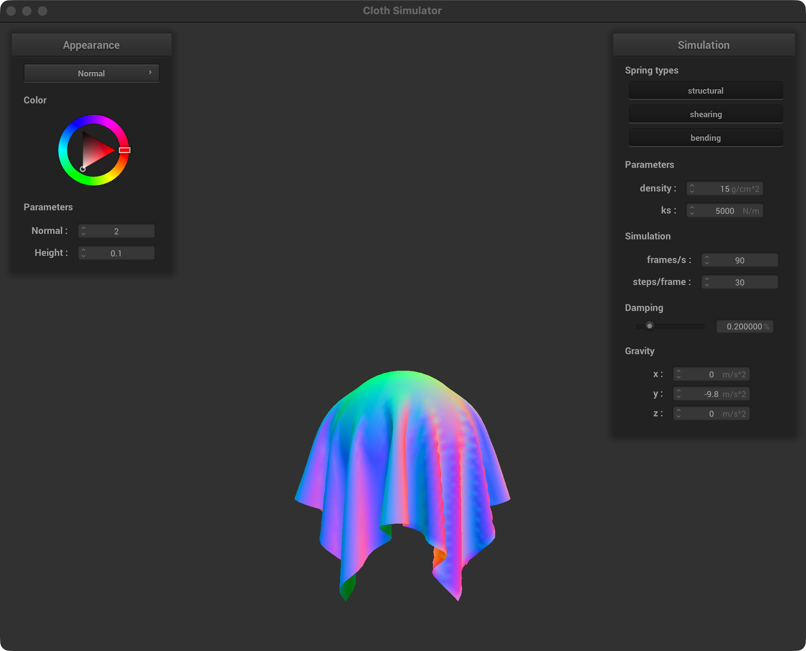
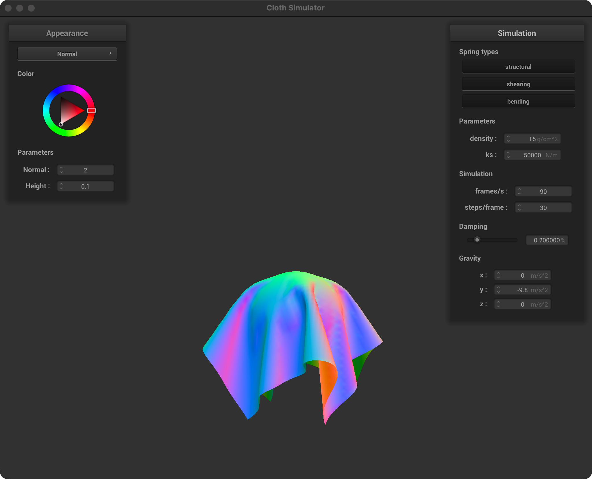
Cloth on Plane
In the plane collision test, the cloth falls under gravity and settles onto the plane surface. The cloth lies flat without penetrating the plane, demonstrating correct collision handling.
The use of a small surface offset ensures that the cloth remains slightly above the plane, preventing numerical instability and visual artifacts.
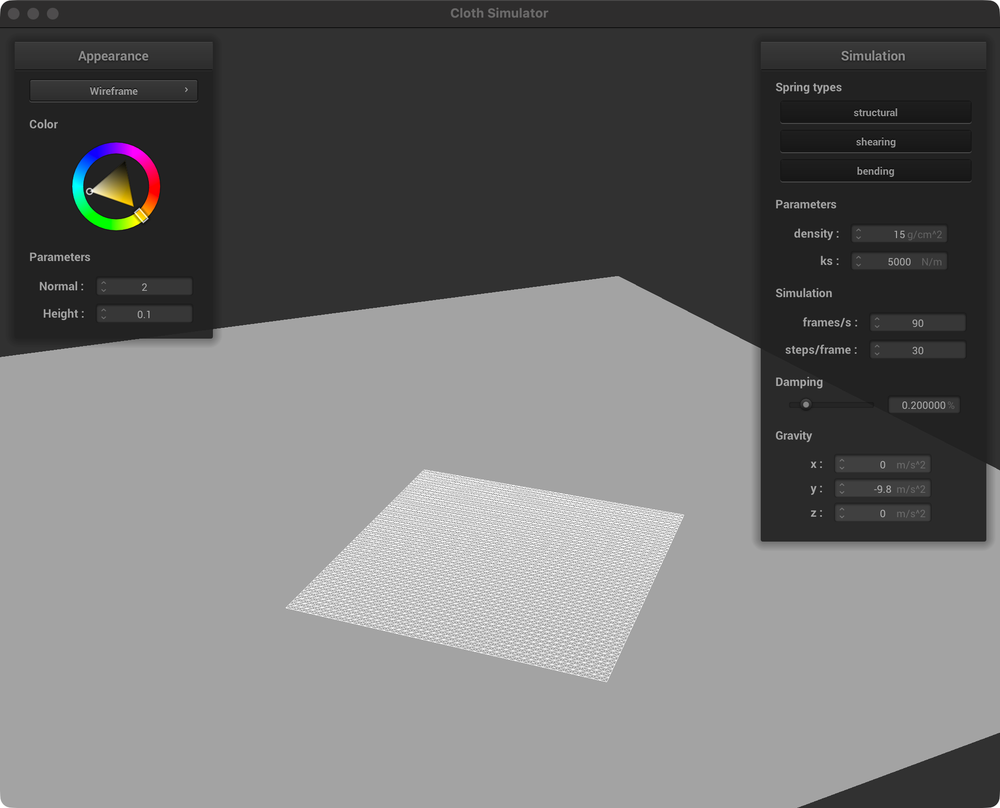
Conclusion
The collision system successfully prevents penetration and produces realistic interactions between the cloth and external objects.
Part 4: Handling Self-Collisions
In this part, we implemented cloth self-collision so that different layers of the cloth can fold onto one another without clipping through each other. A brute-force solution would compare every pair of point masses at every simulation step, which would cost \(O(n^2)\) time and become expensive very quickly for a \(50 \times 50\) cloth. Instead, we used spatial hashing to restrict collision checks to only nearby point masses, which makes the method much more practical for interactive simulation.
Implementation Overview
Our implementation touches all three Part 4 functions in cloth.cpp. In simulate, after Verlet integration updates the point mass positions, we rebuild the spatial hash table and then call self_collide on every unpinned point mass. This means self-collision is handled before collisions with the plane and before the final spring-length correction step, so any overlaps introduced by integration are pushed apart early in the time step.
hash_positionmaps a 3D point mass position to a unique hash key representing one spatial box.build_spatial_mapclears the old map and inserts every point mass pointer into the bucket for its current box.self_collidelooks up only the point masses in the same bucket, computes separation corrections for close neighbors, averages them, and applies the result scaled bysimulation_steps.
Spatial Hashing
Let the cloth width and height be \(W\) and \(H\), and let the number of point masses along those directions be \(N_w\) and \(N_h\). We partition space into boxes whose dimensions are
\[ w = \frac{3W}{N_w}, \qquad h = \frac{3H}{N_h}, \qquad t = \max(w, h) \]
The factor of \(3\) is the same empirical constant suggested in the assignment. It makes each spatial bucket large enough to capture likely self-collision candidates while still keeping the number of point masses per bucket small. For a point mass at position \(p = (x, y, z)\), we quantize its coordinates into bucket indices:
\[ i_x = \left\lfloor \frac{x}{w} \right\rfloor, \qquad i_y = \left\lfloor \frac{y}{h} \right\rfloor, \qquad i_z = \left\lfloor \frac{z}{t} \right\rfloor \]
We then encode these indices into a single key:
\[ \mathrm{hash}(p) = i_x B^2 + i_y B + i_z, \qquad B = 4 \max(N_w, N_h) + 1 \]
This is exactly the strategy used in our hash_position function. In code, we compute the bucket coordinates with floor and store the final value as a float key. Although the key is numeric, conceptually it represents one unique 3D box in space. Then build_spatial_map loops over all point masses, computes the hash of each current position, and appends a pointer to that point mass into the vector stored at that key. Because the cloth moves every frame, the entire map is rebuilt from scratch each simulation step.
Self-Collision Response
Once the spatial map is built, each point mass only needs to check the candidates in its own bucket instead of checking every point mass in the cloth. This is the key efficiency improvement of the method. In self_collide, we first look up the bucket corresponding to the current point mass, skip the point mass itself, and ignore zero-distance cases to avoid dividing by zero when normalizing the direction vector.
For any candidate point mass \(c\), let the current point mass position be \(p\), let the cloth thickness be \(\tau\), and let
\[ d = \|p - c\| \]
If \(0 < d < 2\tau\), then the two point masses are too close, so we compute a correction that pushes the current point mass away from the candidate:
\[ \Delta_i = \frac{p - c}{\|p - c\|}(2\tau - d) \]
If there are \(m\) valid collisions for one point mass in that bucket, we average all pairwise corrections and divide by the number of simulation substeps \(s\):
\[ \Delta p = \frac{1}{ms} \sum_{i=1}^{m} \Delta_i \]
This matches our code directly: we accumulate all correction vectors in correction, count the number of valid neighbors in collisions, and finally update the point mass by correction / collisions / simulation_steps. Averaging prevents an overly large displacement when many nearby point masses contribute at once, and dividing by simulation_steps makes the response more stable across substeps.
Self-Collision Sequence
The three screenshots below document the required full self-collision sequence using the default selfCollision.json scene. In all three images, the important result is that the cloth folds into layers while maintaining visible separation between those layers rather than tunneling through itself.
In the early screenshot, the lower portion of the cloth has just begun to buckle as it falls toward the plane, so we can already see the first self-contact forming near the bottom edge. In the middle screenshot, the cloth has produced several stacked folds, and the layered structure is much more obvious: neighboring sheets of cloth come close, but they remain separated instead of intersecting. In the final screenshot, the cloth reaches a more rest-like configuration on the plane. It is still slightly bouncy, but that is expected because our self-collision response pushes overlapping layers apart without adding any additional pairwise damping. The key success criterion is that the cloth remains folded on itself rather than passing through itself.
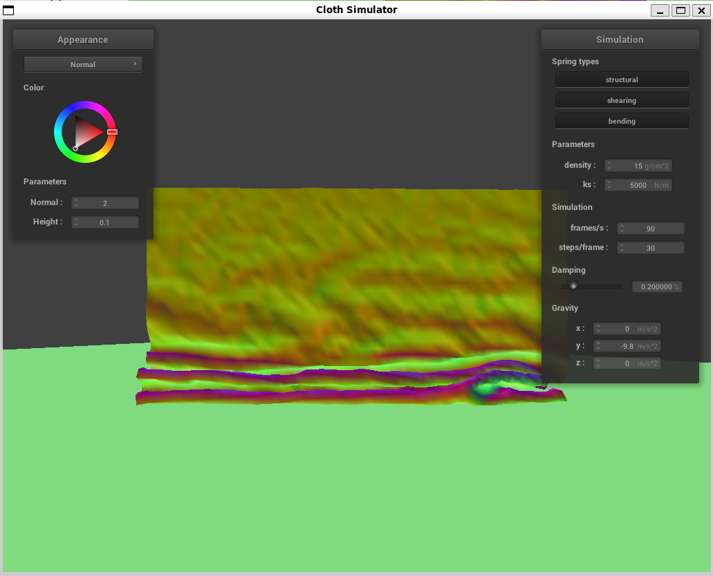
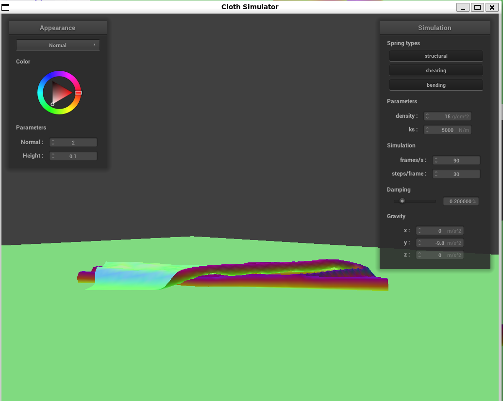
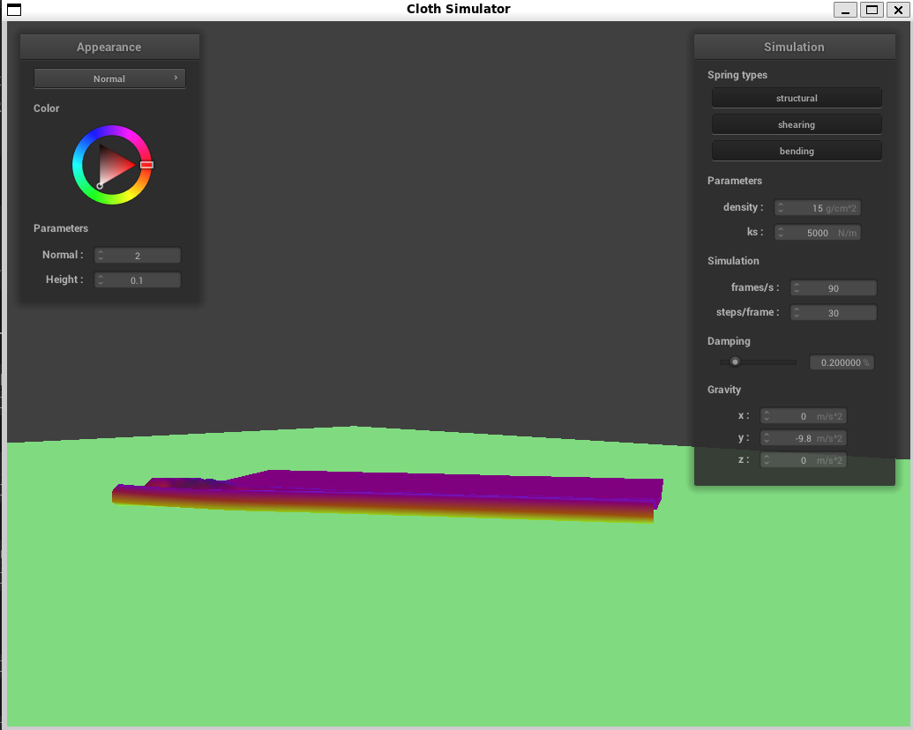
Effect of Density
We next varied density while keeping the rest of the setup fixed. In our simulator, the mass of each point mass is proportional to the cloth density, so changing density primarily changes the amount of inertia the cloth carries as it falls and collides with itself.
With density = 15, the cloth is relatively light. It falls more gently, folds develop more gradually, and the final pile looks looser and less compressed. The layers still fold onto one another correctly, but the overall structure feels softer and less forceful because there is less momentum in the system.
With density = 300, the cloth is much heavier. It falls faster, hits both itself and the plane with more momentum, and compresses into a tighter stack of folds. The increased inertia makes the collapse look more dramatic, and the lower layers are packed together more strongly. Even so, the self-collision logic still prevents visible interpenetration.
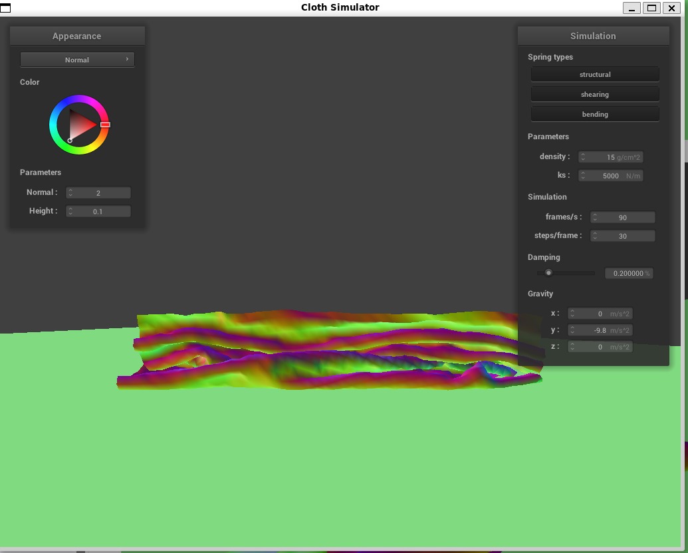
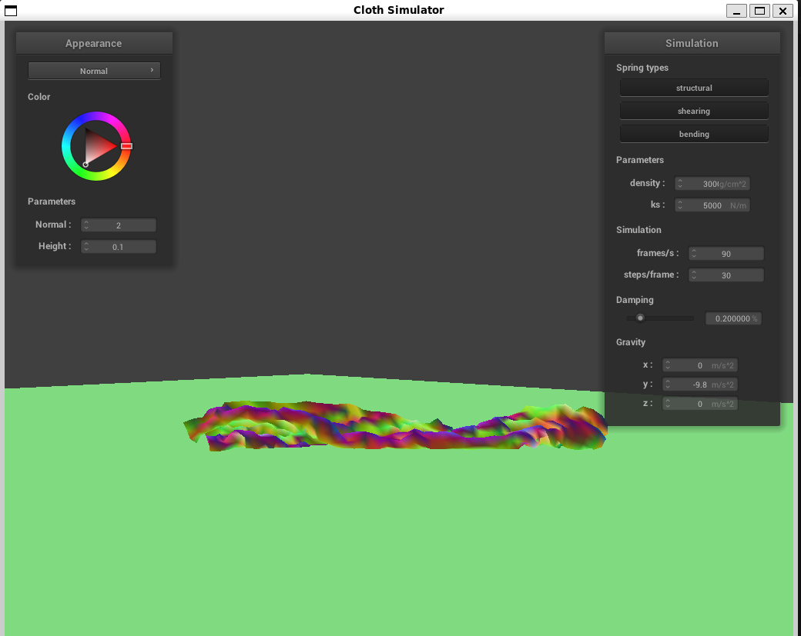
Effect of Spring Constant
We also varied the spring constant \(k_s\), which controls how strongly the springs resist deformation. This parameter changes how easy it is for the cloth to crumple while the self-collision code keeps the different layers from passing through one another.
With ks = 500, the cloth is much softer and more compliant. It bends readily, produces thinner wrinkles, and collapses into deeper and more irregular folds as it falls onto itself. The self-collision response is therefore resolving many close contacts in a highly deformable sheet.
With ks = 50000, the cloth is much stiffer. It resists stretching and bending more strongly, so the folds are broader and the cloth preserves more of its original shape during the fall. Compared to the soft-cloth case, the final structure looks less crumpled and more rigid. This comparison shows that self-collision and stiffness interact closely: the collision code enforces separation between layers in both cases, while \(k_s\) determines whether the resulting folded shape is soft and wrinkled or broad and stiff.
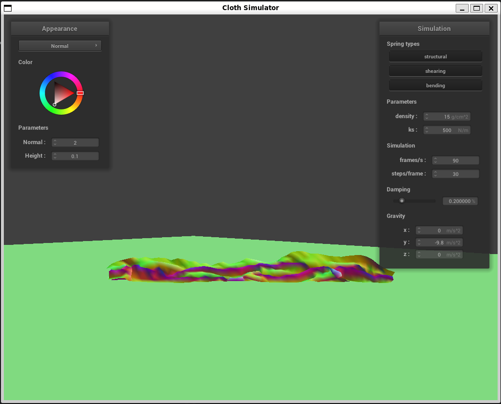
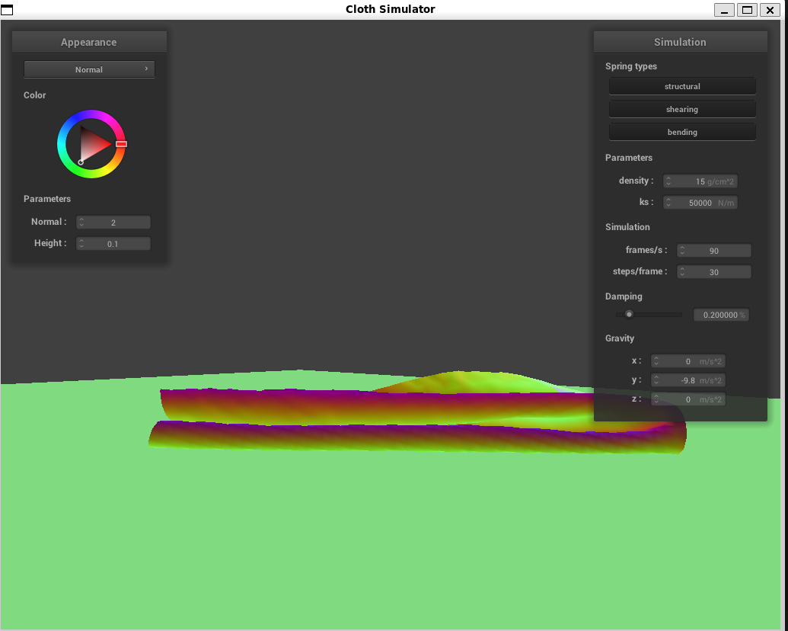
Part 5: Shaders
In this part, we moved the material work from the CPU side of the simulator into GLSL shader programs. The vertex shader is responsible for transforming each vertex into world and clip space while carrying along the normal, tangent, and UV coordinates. After rasterization, the fragment shader receives interpolated per-fragment values and uses them to evaluate lighting, sample textures, perturb normals, or look up reflected radiance from the cubemap. In practice, this separation lets us keep the cloth simulation exactly the same as before while swapping only the appearance model.
For the core lighting shaders, we kept the same point light for every experiment and changed only the shading logic. Diffuse shading uses the Lambertian term
\[ L_d = k_d \frac{I}{r^2} \max(0, \mathbf{n}\cdot\mathbf{l}), \]
while the full Blinn-Phong shader adds both an ambient term and a halfway-vector specular term:
\[ L = k_a I_a + k_d \frac{I}{r^2} \max(0, \mathbf{n}\cdot\mathbf{l}) + k_s \frac{I}{r^2} \max(0, \mathbf{n}\cdot\mathbf{h})^p. \]
Diffuse Shading
In Diffuse.frag, we normalize the interpolated normal, compute the light direction from the fragment position to the point light, and scale the cosine term by the inverse-square light falloff. The result is a matte response that clearly shows the large folds of the cloth but does not produce any glossy highlights.
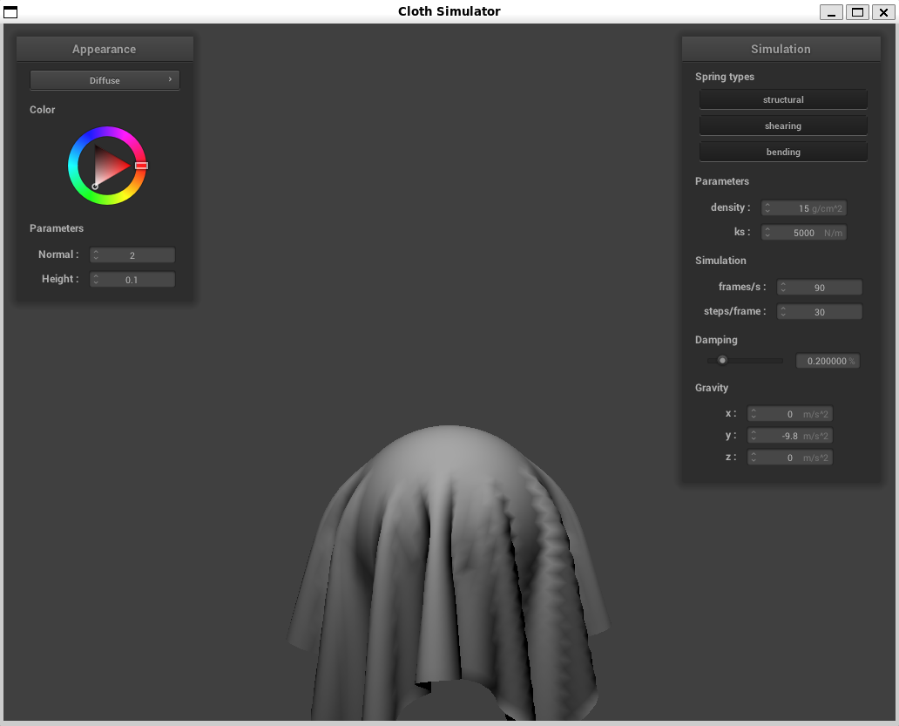
Blinn-Phong Shading
In Phong.frag, we reuse the diffuse term and add a small ambient component plus a specular highlight computed from the halfway vector between the light direction and the view direction. To make the required breakdown images easy to capture, we also added three small fragment variants, PhongAmbient.frag, PhongDiffuse.frag, and PhongSpecular.frag, that isolate the individual terms while keeping the same coefficients as the full shader.
The ambient-only image is nearly flat and mainly prevents fully black shadowed regions. The diffuse-only image recovers the large-scale shape of the cloth because brightness depends only on how directly each fragment faces the light. The specular-only image concentrates energy into view-dependent highlights, so it mostly disappears except on folds whose normals align with the halfway vector. The full Blinn-Phong result combines all three pieces and produces a much more convincing satin-like cloth appearance than diffuse shading alone.
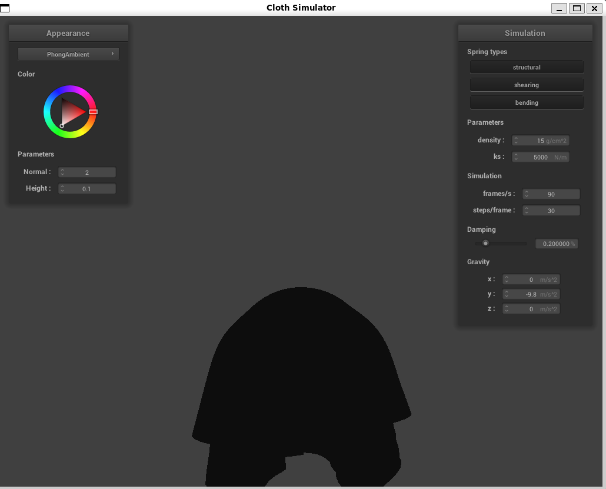
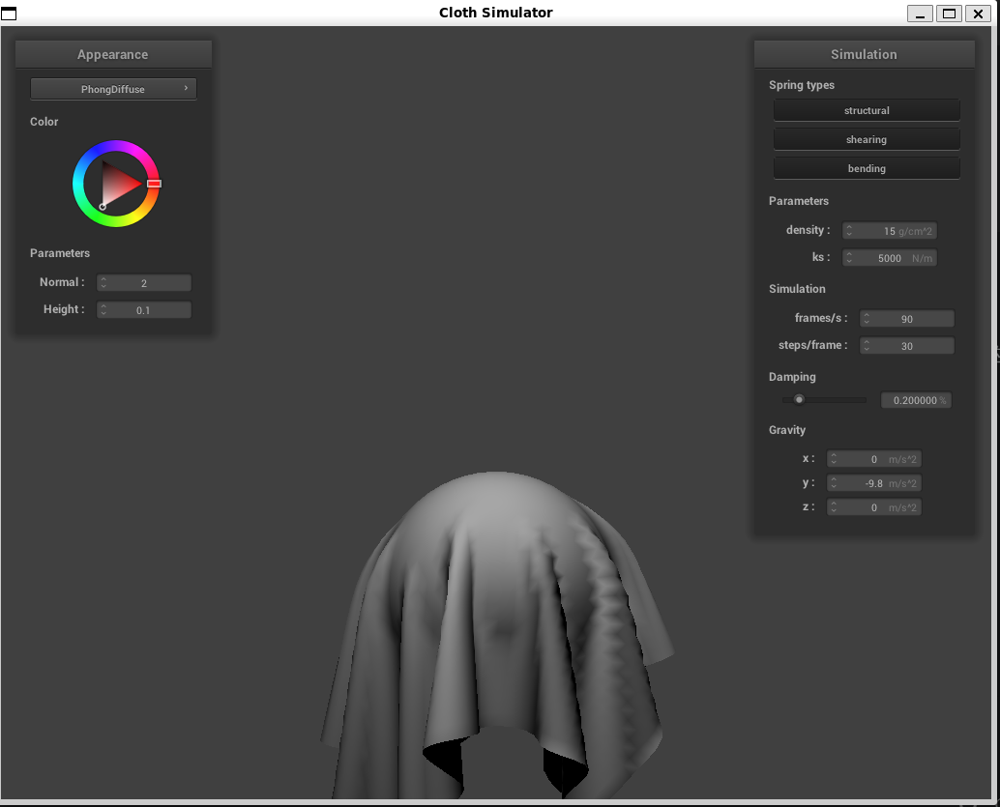
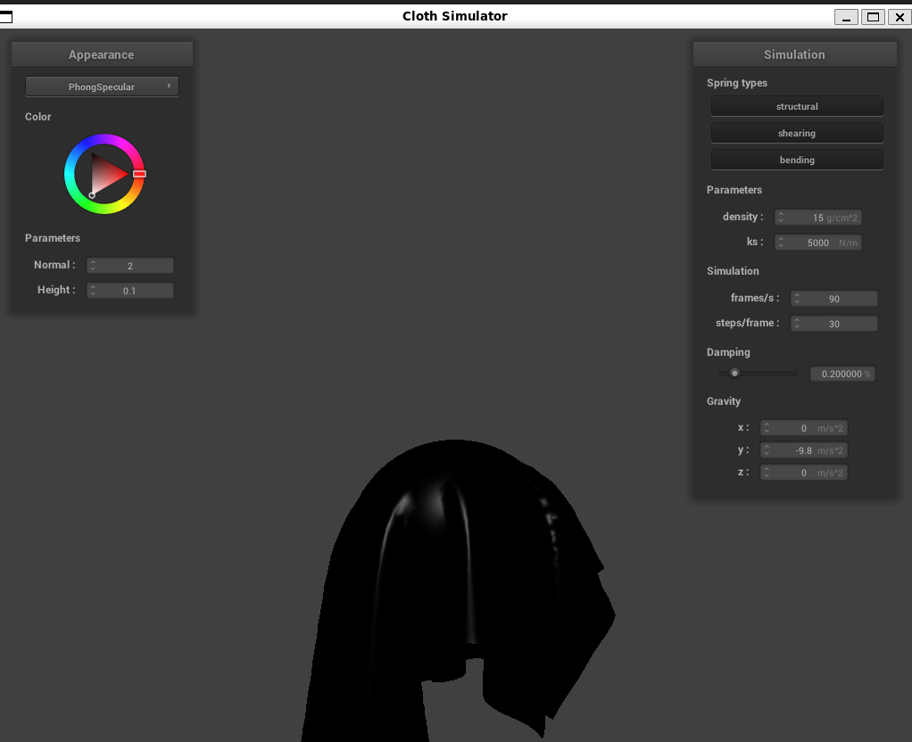
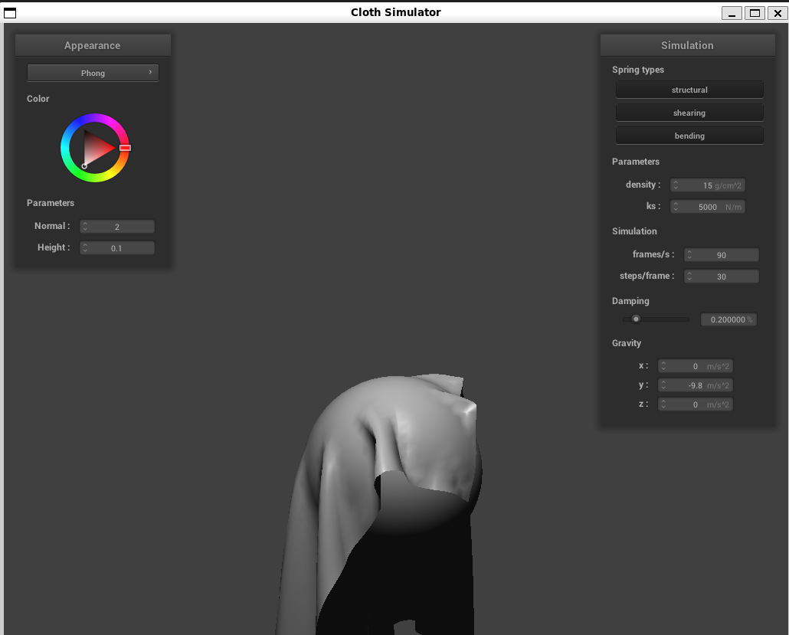
Texture Mapping
For the texture shader, Texture.frag simply samples u_texture_1 at the interpolated UV coordinate and outputs that color directly. Instead of reusing the default texture, we generated a new quilted brocade texture and saved it to textures/texture_part5_albedo.png, then bound it to u_texture_1 in the simulator. Because the cloth mesh already carries a clean UV parameterization, the new texture wraps naturally over the draped surface and makes the folds much easier to read.
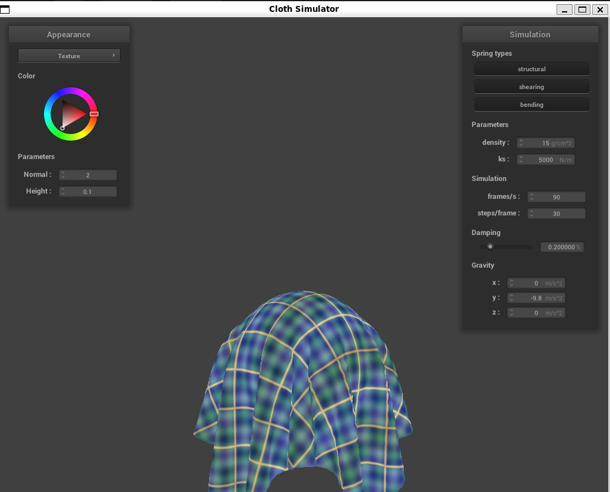
Bump and Displacement Mapping
For both Bump.frag and Displacement.frag, we work in tangent space. Starting from the interpolated tangent, bitangent, and normal basis, we sample a custom height map from u_texture_2, which we rebound to textures/texture_part5_height.png so that this part does not use the default texture_2.png. We approximate the local height derivatives by finite differences:
\[ dU = \big(h(u+\tfrac{1}{w}, v) - h(u,v)\big) k_h k_n,\qquad dV = \big(h(u, v+\tfrac{1}{h}) - h(u,v)\big) k_h k_n, \]
then build the perturbed tangent-space normal \(( -dU, -dV, 1)\) and map it back to world space with the TBN matrix. In the displacement shader we additionally offset the vertex position itself along the original normal, so the lighting change is accompanied by a real geometric change in the surface.
The visual difference between the two approaches is clearest on the sphere. Bump mapping changes shading only, so the sphere silhouette stays smooth even when the fine pattern looks embossed. Displacement mapping changes the actual mesh, so the raised quilting affects the silhouette and becomes much more convincing at grazing angles. This also makes mesh resolution matter more: on the coarse sphere the displacement pattern looks faceted because there are too few vertices to carry the height field, while the finer sphere preserves the quilted shape much more cleanly.
Base Results
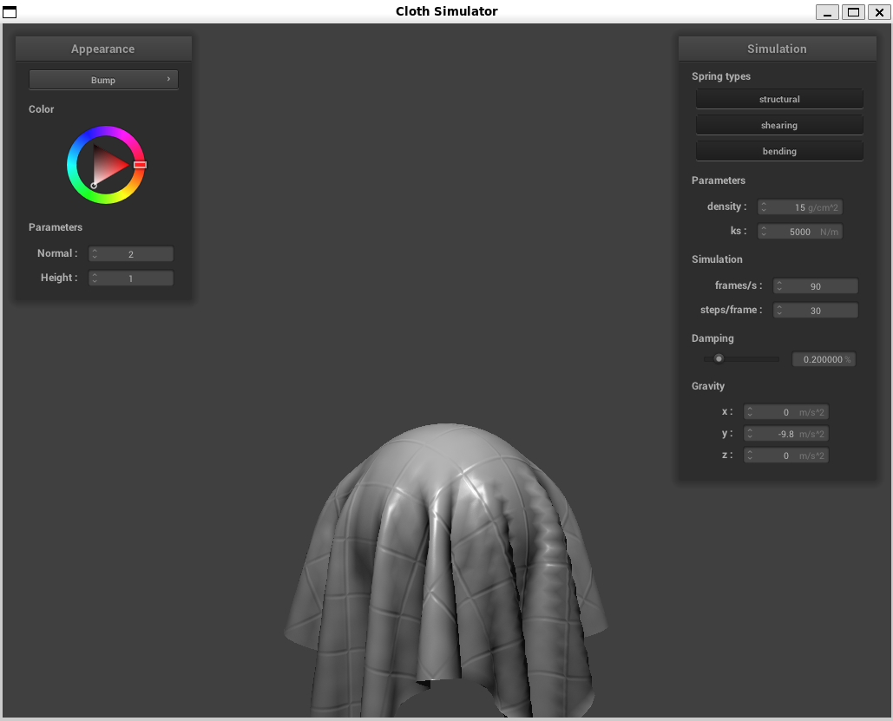
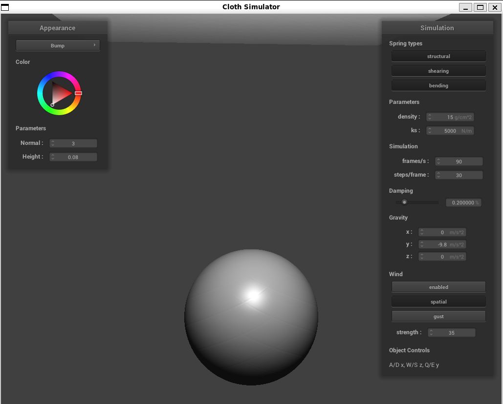
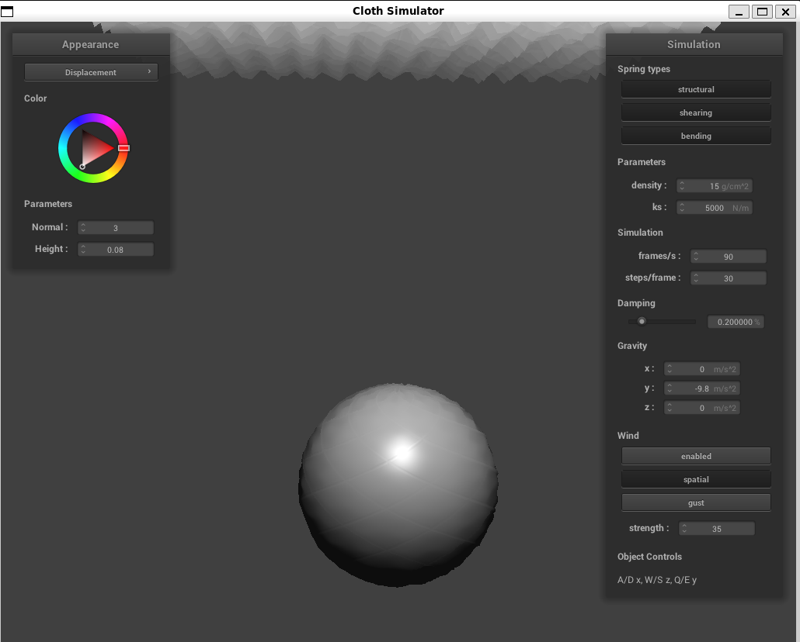
Sphere Coarseness Comparison
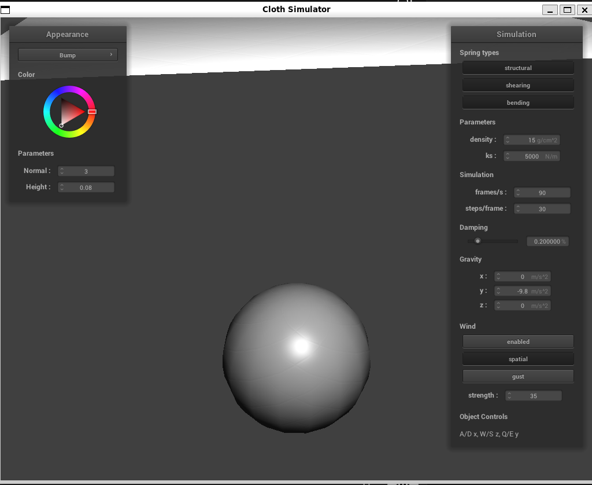
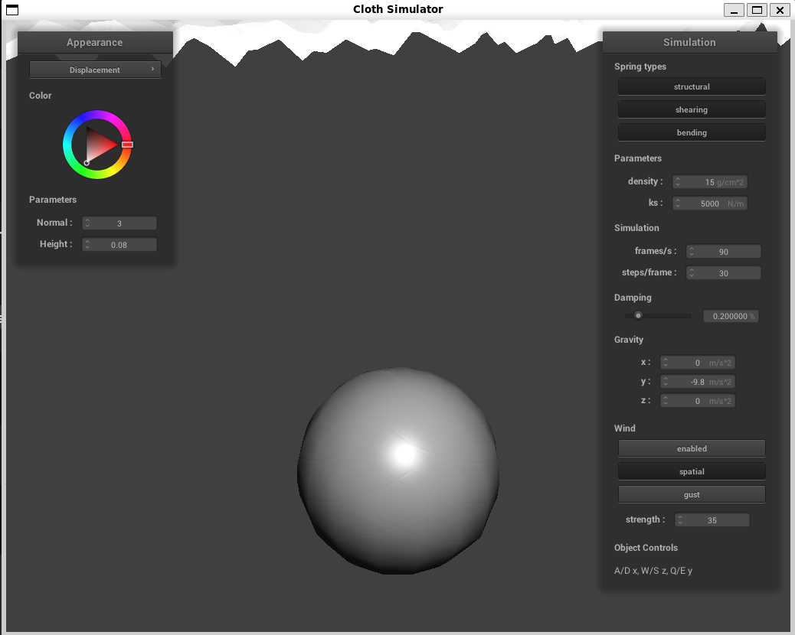
Environment-Mapped Reflections
In Mirror.frag, we compute the eye ray from the camera position to the fragment, reflect it around the interpolated surface normal, and sample the cubemap in that reflected direction. This produces a clean mirror response without tracing any secondary rays. On the cloth, the reflected environment bends with the folds and makes the draped geometry easy to see. On the sphere, the same shader gives the expected polished-metal look because the normal field is smooth and symmetric.
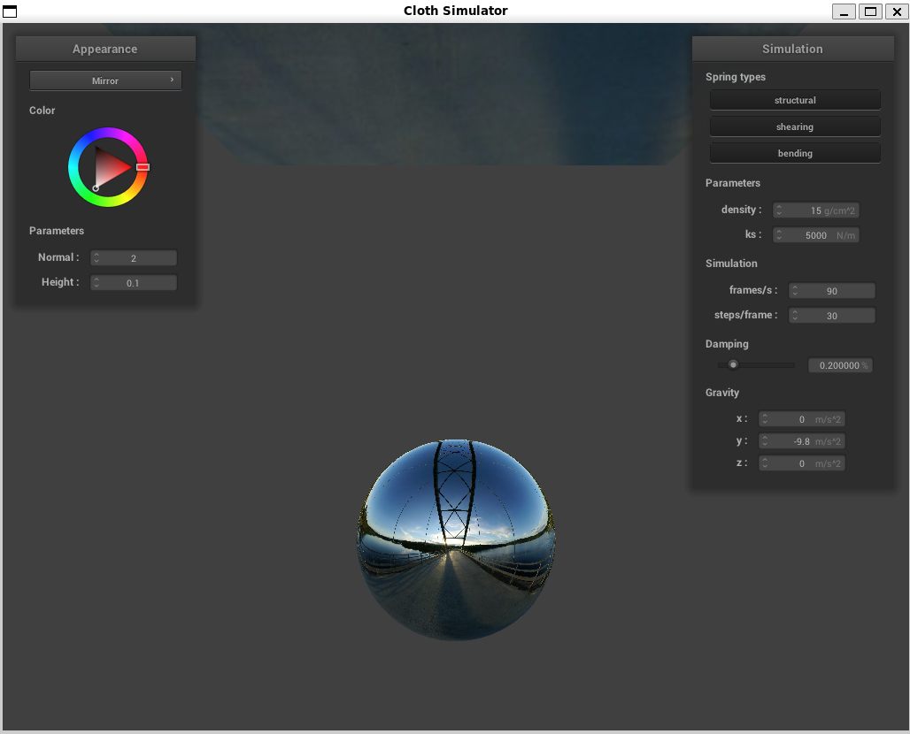
Part 5 Extra Credit: Custom Shader
For the extra credit, we implemented a custom iridescent fabric shader in Custom.vert and Custom.frag. The vertex stage applies a small geometry lift from the same custom height map used for displacement mapping, while the fragment stage combines four ideas from the main part of the assignment: the custom albedo texture, tangent-space normal perturbation, Blinn-Phong lighting, and view-dependent cubemap reflections.
The goal was to make something that still reads as cloth, but with a more stylized satin or brocade finish. The albedo map supplies the base woven pattern, the height map adds small embossed seams, the specular response is modulated by a grayscale mask so some regions catch stronger highlights than others, and a Fresnel-like rim term blends in the environment map near grazing angles. Compared to the plain Phong shader, the result feels more layered: the cloth keeps its local textile pattern, but the folds also pick up colored reflections from the cubemap.
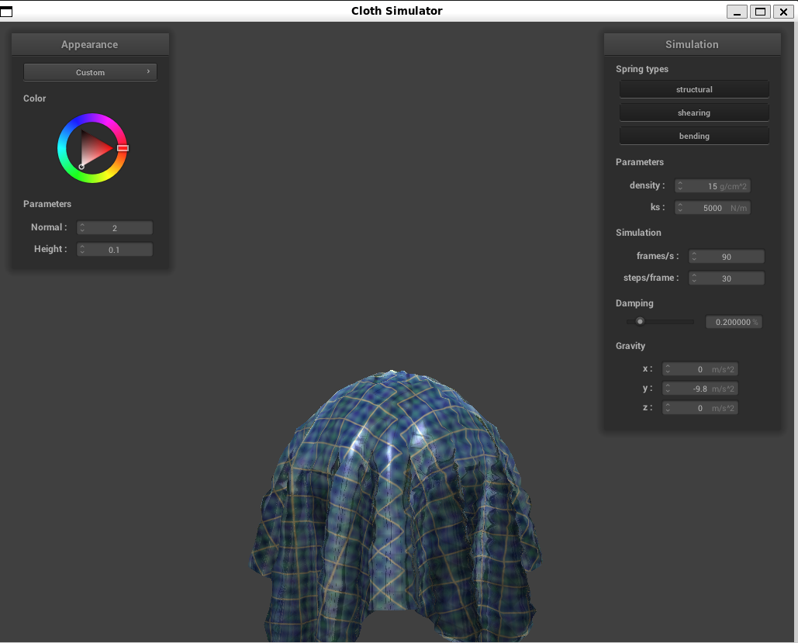
Homework 4 Extra Credit: Additional Cloth Features
For the cloth-simulation extra credit, we focused on four additions that were independent, easy to demonstrate, and small enough to fit naturally into the existing simulator: a spatially varying wind field, an optional time-varying gust mode, keyboard-controlled motion for collision objects, and a new axis-aligned box primitive. We deliberately avoided a much larger BVH-style self-collision rewrite because the existing codebase does not already provide that infrastructure, and it would have carried much more risk than the assignment needed.
1. Spatially Varying Wind
The first feature adds wind as a true position-dependent force instead of a single constant acceleration. We implemented this in cloth.cpp by sampling a wind vector at each triangle centroid and then distributing the resulting aerodynamic force equally to the three incident point masses. The sampled field starts from one dominant wind direction and then modulates both magnitude and a small cross-breeze term with sines and cosines of the centroid position, so different parts of the cloth feel slightly different pushes at the same moment.
In compact form, the wind we apply can be summarized as
\[ \mathbf{w}(x,y,z,t) = \mathbf{d}\,s \, m_{\text{space}}(x,y,z) + \Delta_{\text{space}}(x,y,z), \]
where \(\mathbf{d}\) is the base direction, \(s\) is the user-controlled strength, \(m_{\text{space}}\) is a spatial modulation term, and \(\Delta_{\text{space}}\) adds a smaller sideways variation. This makes the cloth ripple instead of simply leaning as one rigid sheet.
This counts as one extra feature on its own because the cloth already behaves differently before gust mode is even enabled: with wind disabled, the hanging sheet in scene/extra_wind.json mostly settles into a straight drape, while with spatial wind enabled it bows outward and develops uneven folds across its width.
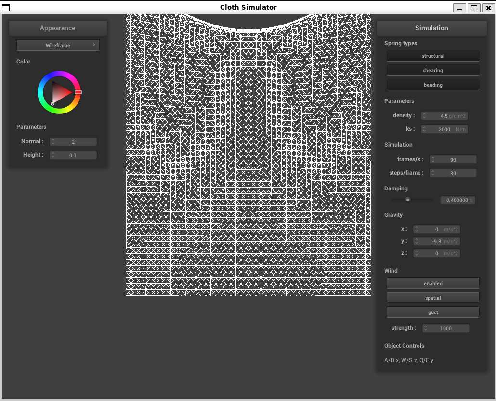
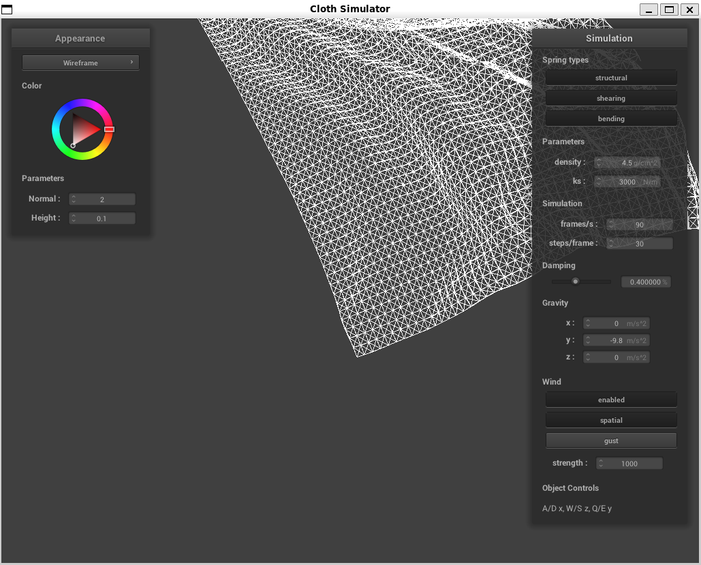
2. Time-Varying Gust Mode
On top of the spatial wind field, we added a separate gust mode that multiplies the wind force by a sinusoidal time factor. The implementation reuses the same spatial field but applies an additional
\[ g(t) = 1 + A \sin(2 \pi f t) \]
term, where \(A\) is the gust amplitude and \(f\) is the gust frequency. The simulator keeps a running simulation time in clothSimulator.cpp, passes that value into the cloth step, and lets the wind field stay steady or oscillate depending on the GUI toggle.
We treated this as a separate extra-credit feature because it changes the behavior over time rather than over space. With the same hanging-cloth scene and the same base wind strength, steady spatial wind produces a mostly stable bent shape, while gust mode repeatedly strengthens and weakens the force so the cloth pulses forward and relaxes back.
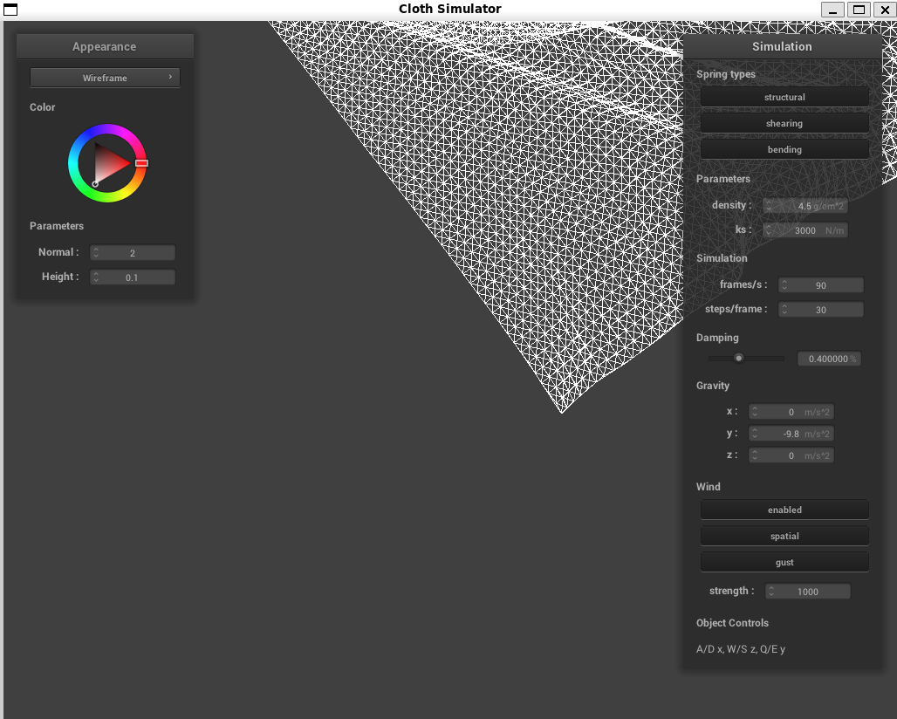
3. Movable Collision Sphere
The third feature adds interactive motion for collision objects. We extended the collision-object base class with optional movement and reset hooks, marked specific scene objects as movable in JSON, and then added keyboard controls in clothSimulator.cpp. In our showcase scene, scene/extra_movable_sphere.json, the sphere starts slightly behind a pinned vertical cloth and can be translated with A/D along \(x\), W/S along \(z\), and Q/E along \(y\).
This is a distinct extra-credit feature because the cloth is no longer only reacting to static primitives. Once the sphere is moved into the sheet, collisions are recomputed against the new sphere position every simulation step, so the cloth stretches and slides over a changing obstacle rather than only settling onto a fixed one.
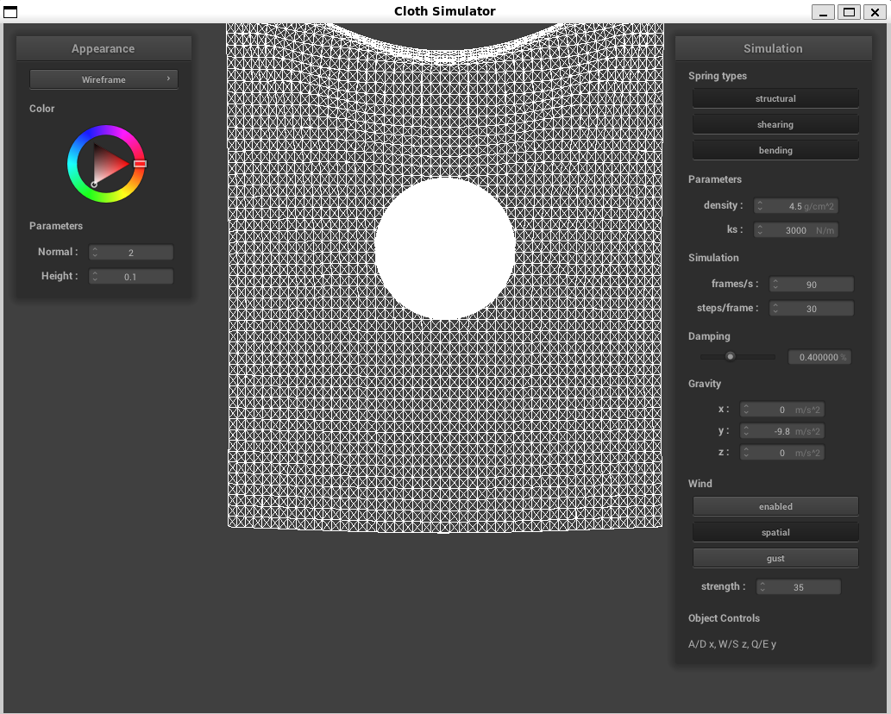
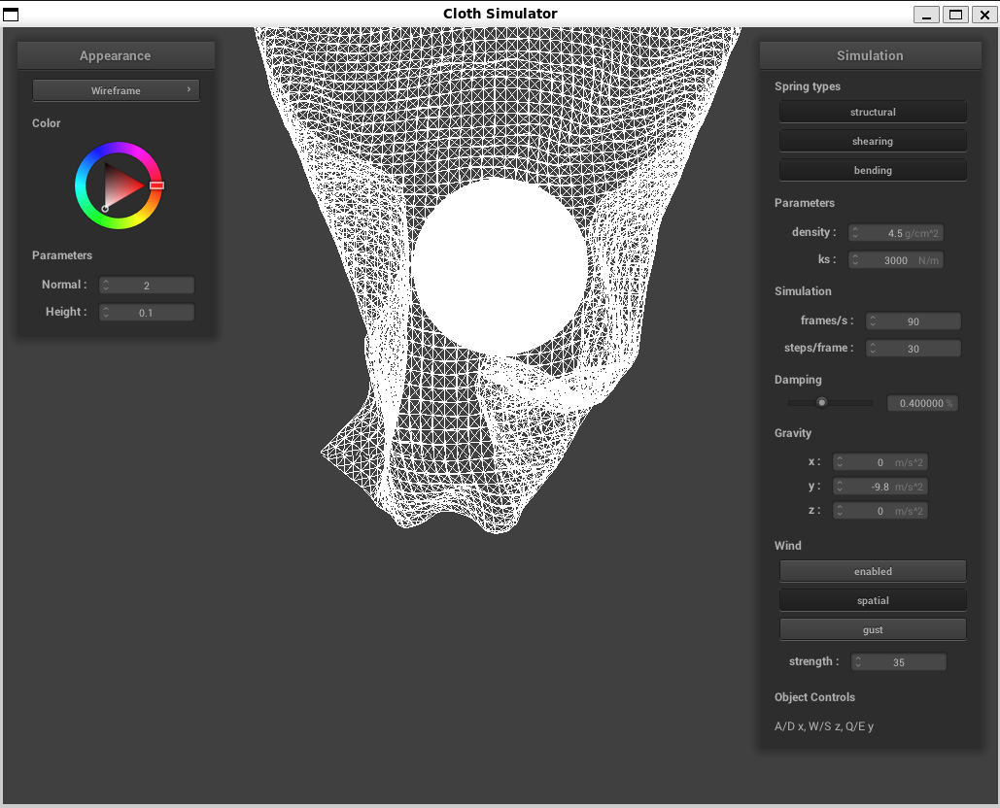
4. Axis-Aligned Box Primitive
The last feature adds a new collision primitive, an axis-aligned box, implemented in src/collision/box.cpp and parsed from scene files with the new box key. For collision handling, we first check whether a point mass is already inside the box. If it is, we project it to the nearest face. Otherwise, we test whether the segment from the previous point-mass position to the current one intersects the box and place the point mass back on the entering face with a small offset, using the same friction-style correction pattern as the sphere and plane code.
This counts independently because it adds a genuinely new primitive rather than modifying the behavior of an existing one. The comparison below uses a plane-only baseline and then a plane-plus-box scene. Without the box, the cloth lands flat on the floor. With the box present, it catches first on the top face and then drapes over the sharp edges, which is a different contact pattern from the plane or sphere scenes in the main assignment.
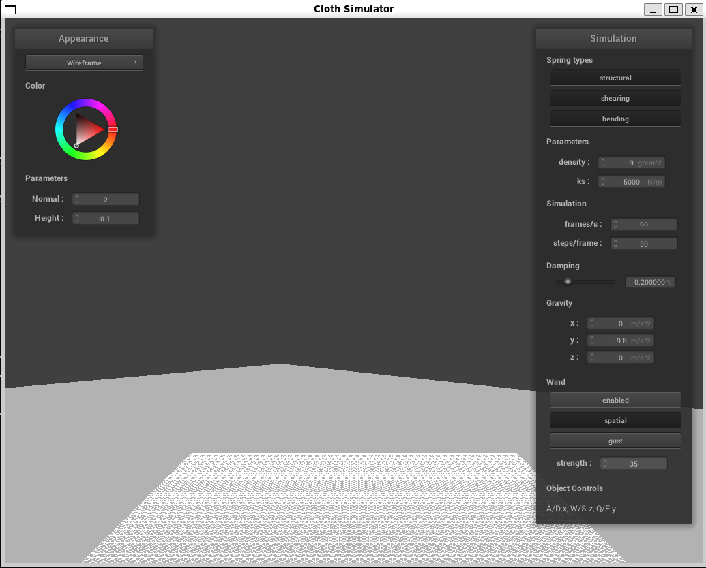
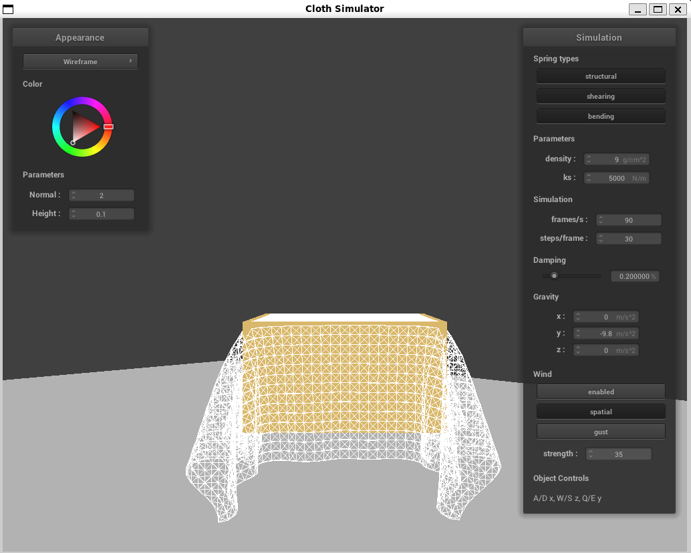
Challenges and Lessons Learned
During the implementation, we encountered several challenges that required careful debugging and reasoning.
- Numerical instability in simulation: At early stages, the cloth would occasionally “explode” due to large forces or unstable integration. This was resolved by enforcing a maximum spring elongation constraint (10%) and carefully tuning damping parameters.
- Self-collision performance: A naive O(n²) approach was computationally infeasible for dense cloth grids. Implementing spatial hashing significantly reduced the complexity by limiting collision checks to nearby point masses.
- Collision artifacts: Without a small surface offset, point masses could stick to or penetrate planes and spheres. Introducing a small offset along the normal direction improved both stability and visual realism.
- Shader debugging: Implementing GLSL shaders required careful handling of coordinate spaces (world space vs tangent space). Errors in TBN matrix construction initially caused incorrect lighting results, which were fixed through step-by-step visualization of intermediate components.
Through these challenges, we gained a deeper understanding of the importance of numerical stability, efficient data structures, and coordinate transformations in graphics systems.